Mapping Visuals to Usable Math Modules
Every vocabulary word Bob and Sharon pointed at a Usable Math coach-hint visual for, matched to the exact module, slide and hint — and whether that visual has actually been pulled into the Word Explorer yet.
Add & Take Away: How Many More 4.NBT · started 2026-08-20
| Term | Grade | Slide / hint | Status | Visual | Notes |
|---|---|---|---|---|---|
| more | K | Slide 5 | integrated | 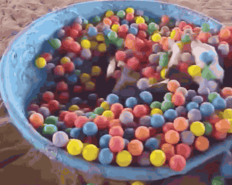 |
Animated GIF, 41 frames. |
| fewer | K | Slide 5 | integrated | 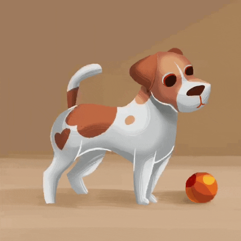 |
Animated GIF. |
| how many more | 1 | Slide 3 (Wildwood Gym), Slide 7, Slide 11 | integrated | 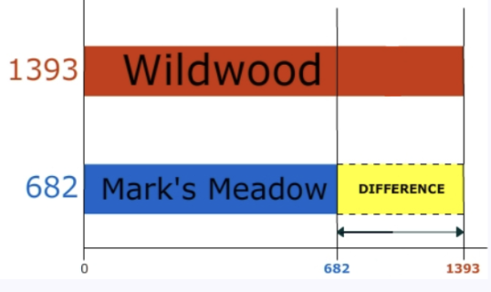 |
Visual Vicuna bar chart, Slide 3. Slide 11 is the blank "design your own" prompt — nothing to extract there. |
| difference | 1 | Slide 7 (Gordon/Hillcrest) | integrated | 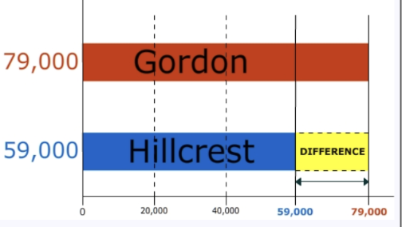 |
Visual Vicuna bar chart, Slide 7. |
| take away | K | Slide 3 (Wildwood Gym) | integrated | Same chart as "how many more" — this is the only visual Bob cited for the term. |
Fractions Grade 4 · started 2026-08-20
| Term | Grade | Slide / hint | Status | Visual | Notes |
|---|---|---|---|---|---|
| fraction | 3 | Slide 5 | integrated | 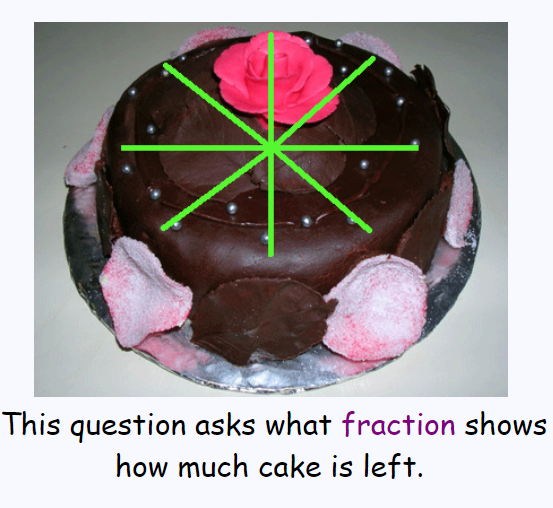 | Coaches eat cake sections. |
| equal | K | Slide 11 | integrated | 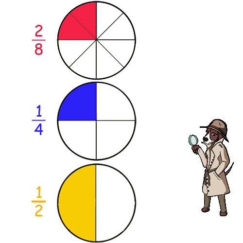 | Math Bear divides a spinner into 8. |
| proper fraction | 4 | Slide 17 | integrated | 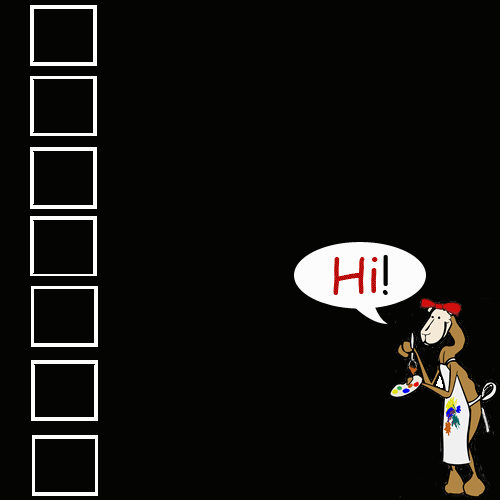 | Ann's Flower Garden. Animated GIF, 13 frames. |
Money Grade 3-6 · started 2026-08-20
| Term | Grade | Slide / hint | Status | Visual | Notes |
|---|---|---|---|---|---|
| dollar | 2 | Slide 18 | integrated | 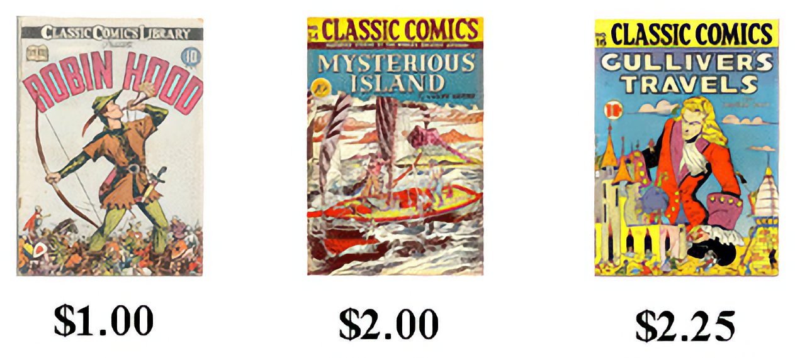 | Went with Slide 18 over Slide 6 — its price tags show whole dollars and cents together, more literal than Slide 6's rate problem. |
| cents | 2 | Slide 18 | integrated | Same image as dollar — the $2.25 tag is the cents example. | |
| money | 2 | Slide 5 | integrated | Animated GIF. | |
| price | 2 | Slide 16 | integrated | 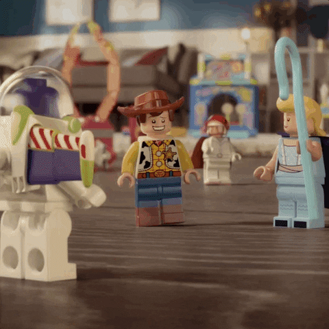 | Animated GIF from the toy-store word problem. |
Multiplication and Division Grade 3-6 · started 2026-08-20
Slide numbers here run ~2 ahead of Bob's citations throughout this deck (title/Welcome slides appear to count differently) — matched by content instead. Slide 11 (Amelia Strawberries) turned out to be about "left over", not "division" as the earlier email suggested — the later Slide 17/19 citation for divide/division was correct.
| Term | Grade | Slide / hint | Status | Visual | Notes |
|---|---|---|---|---|---|
| total | 1 | Slide 3 → matched to Slide 5 | integrated | 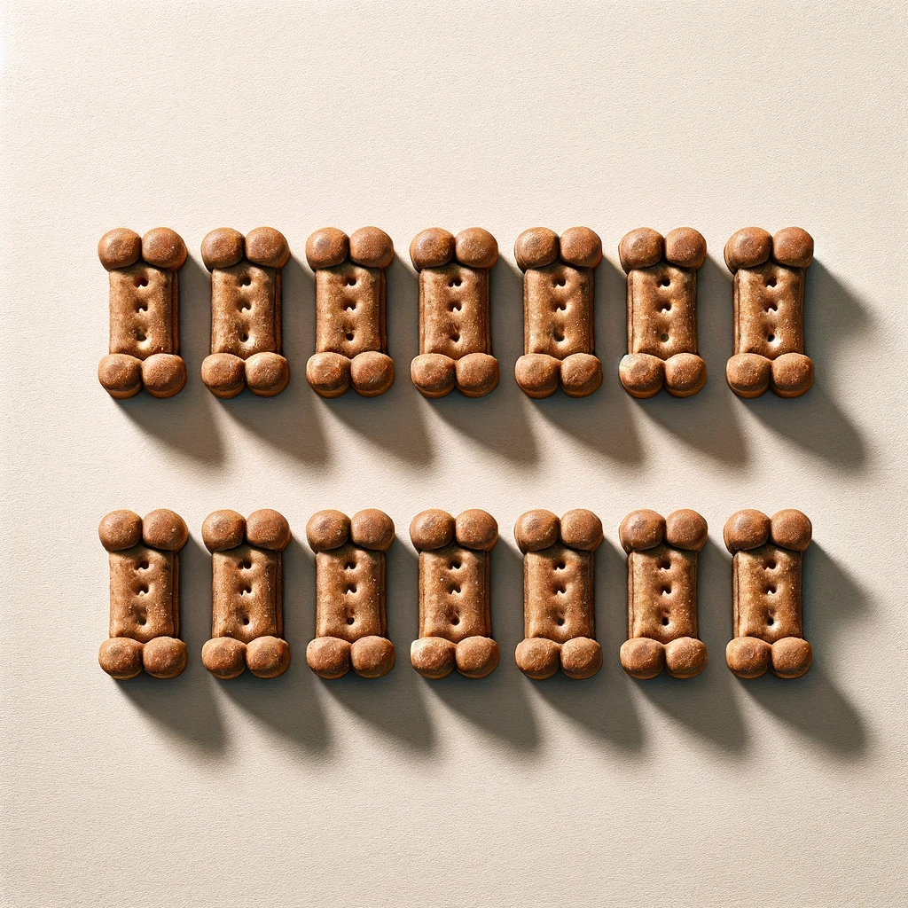 | The slide's own text says "Total = 12" but this decorative photo shows 14 bones — used it anyway since it's the panel's actual image, with alt text that doesn't assert a count. |
| expression | 5 | Slide 23 | not started | — | This slide is marked "skipped in slideshow mode" and its hint panels show leftover dog-treats content that doesn't match its own pencils word problem — looks like an unfinished template. Worth flagging to Bob. |
| check | 3 | Slide 7 (Chef Math Bear) | not started | — | Confirmed the right slide (Mr. Lopez / 252÷7 problem), but all 3 hint panels are native text and equations, no chart image to extract. |
| left over | 4 | Slide 11 Hint 4 | integrated | 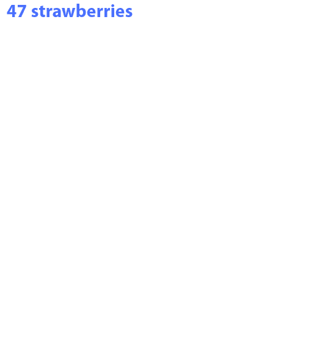 | Animated GIF, 31 frames — the Amelia Strawberries problem. |
| divide / division | 3 | Slide 19 (Daniel Cupcakes) | integrated | Animated GIF, 29 frames. |
Geometry: Figures, Shapes and Angles Grade 3-5 · started 2026-08-20
| Term | Grade | Slide / hint | Status | Visual | Notes |
|---|---|---|---|---|---|
| triangle | K | Slide 13, Hint 1 | integrated | — | |
| equilateral triangle | 4 | Slide 13, Hint 3 | not started | — | Confirmed the right slide and hint (a red triangle graphic), but it's built from native Slides shapes, not one flat image — no single file to extract. |
| isosceles triangle | 4 | Slide 13, Hint 2 | integrated | — | |
| shape | K | Slide 6, Hint 2 | integrated | 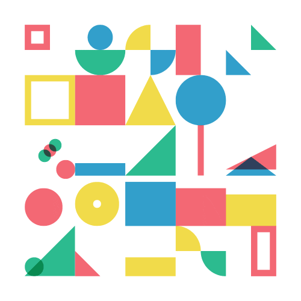 | — |
| vertex | 1 | Slide 3, Hints 1 & 4 | integrated | 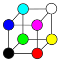 | Used Hint 4 (Visual Vicuna) over Hint 1 (a hallway-corner photo) — more directly a diagram of the concept. |
| acute angle | 4 | Slide 11, Hint 4 or 2 | integrated | Used Hint 4 — a labeled acute-vs-right-angle comparison. |
Geometry: Lines and Lines of Symmetry Grade 3-5 · started 2026-08-20
| Term | Grade | Slide / hint | Status | Visual | Notes |
|---|---|---|---|---|---|
| perpendicular lines | 4 | Slide 3, Hint 3 | integrated | 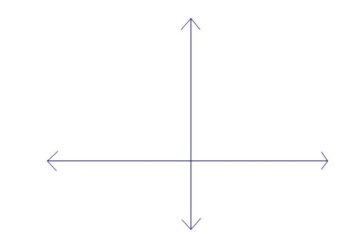 | — |
| parallel lines | 4 | Slide 5, Hints 1 & 3 → used Hint 2 instead | integrated | Hint 1 shows only a single line (not illustrative of "parallel"), Hint 3 is text-only — used Hint 2's photo instead. | |
| square | K | Slide 7, Hint 4 | integrated | 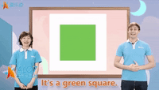 | Video thumbnail frame, not a still image originally. |
| line of symmetry | 4 | Slide 9, Hints 2 & 3 | not started | — | Confirmed the right slide (a star and the letter H, both with symmetry lines drawn) but both hints are native Slides shapes, not flat images. |
Geometry: Maps + Grids + Ordered Pairs Grade 3-5 · started 2026-08-20
| Term | Grade | Slide / hint | Status | Visual | Notes |
|---|---|---|---|---|---|
| x, y axis | 5 | Slide 11 | integrated | 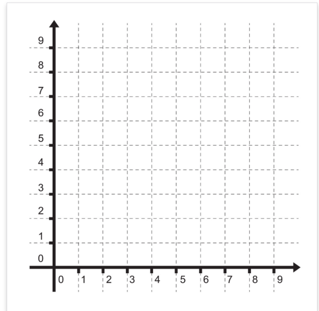 | In the bank as "ordered pair". |
Area and Perimeter Grade 3-6 · started 2026-08-20
| Term | Grade | Slide / hint | Status | Visual | Notes |
|---|---|---|---|---|---|
| area | 3 | Slide 6, Hint 1 | integrated | 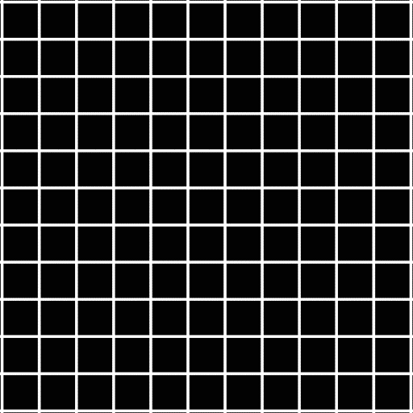 | — |
| perimeter | 4 | Slide 8, Hint 1 | integrated | 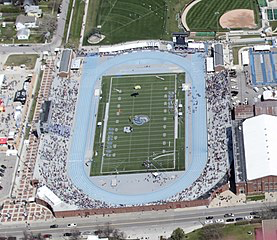 | — |
| rectangle | K | Slide 8, Hint 3 | integrated | The panel's photo alone (no length/width labels — those are separate overlaid text on the slide, not part of the image itself). |
Measurement Grade 3-5 · started 2026-08-20
| Term | Grade | Slide / hint | Status | Visual | Notes |
|---|---|---|---|---|---|
| meter | 2 | Slide 8, Hint 2 | integrated | 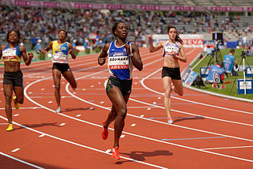 | — |
| kilogram | 3 | Slide 8, Hint 3 | integrated | 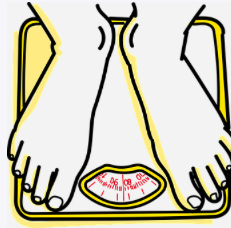 | — |
| centimeter | 2 | Slide 8, Hint 4 | integrated | 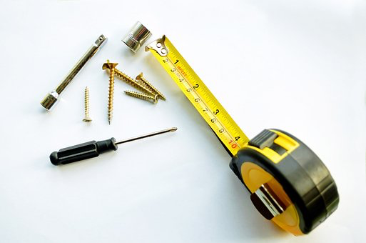 | — |
| yard | 3 | Slide 12, Hint 2 | integrated | 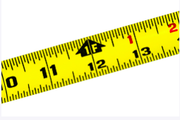 | — |
Charts & Graphs Grade 3-5 · started 2026-08-20
| Term | Grade | Slide / hint | Status | Visual | Notes |
|---|---|---|---|---|---|
| bar graph | 2 | Slide 3, Hint 1 | integrated | 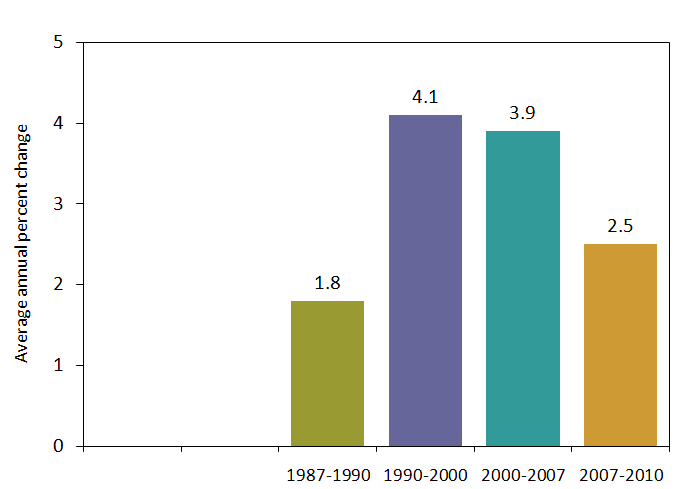 | — |
| graph | 1 | Slide 5, Hint 1 | integrated |  | — |
| tally chart | 1 | Slide 9 | integrated | 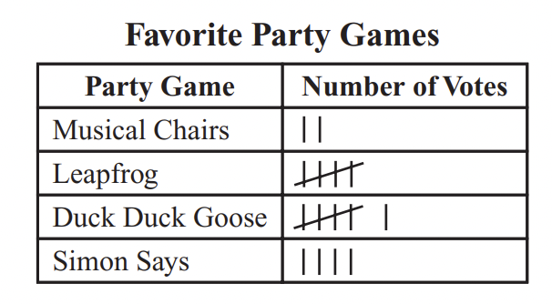 | Used the slide's own tally-chart table rather than Hint 1's video-still. |
Algebraic Thinking Grade 3-6 · started 2026-08-20
Slide numbers run ~2-3 ahead of Bob's citations in this deck too (same pattern as Multiplication and Division) — matched by content instead.
| Term | Grade | Slide / hint | Status | Visual | Notes |
|---|---|---|---|---|---|
| zero | K | Slide 36 or 37 → matched to Slide 34 ("The History of Zero") | integrated | 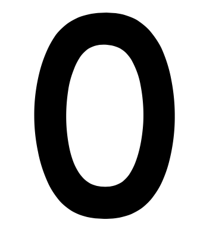 | — |
| prime number | 4 | Slide 32, Hint 2 | integrated | The hint's image was actually a split "1 / 7" graphic. Used only the 7 — the number 1 is explicitly not prime, so including it risked implying the opposite of what the term means. Also downscaled from a 4.5MB original. | |
| hindu-arabic numbers | 4 | Slides 33 & 35 | integrated | 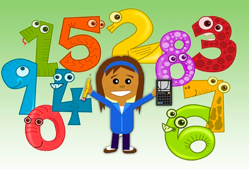 | Slide 33 ("Our numbers were created in India...") — used its digits-0-9 illustration over Slide 35's hand-drawn historical numeral systems. |
| number line | 2 | Slide 39 | integrated | 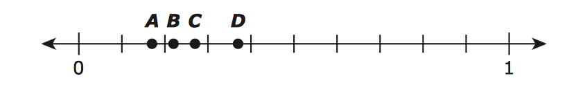 | — |
Estimation Grade 3-6 · started 2026-08-20
| Term | Grade | Slide / hint | Status | Visual | Notes |
|---|---|---|---|---|---|
| rounding | 3 | Slide 5, Hint 3 | integrated | 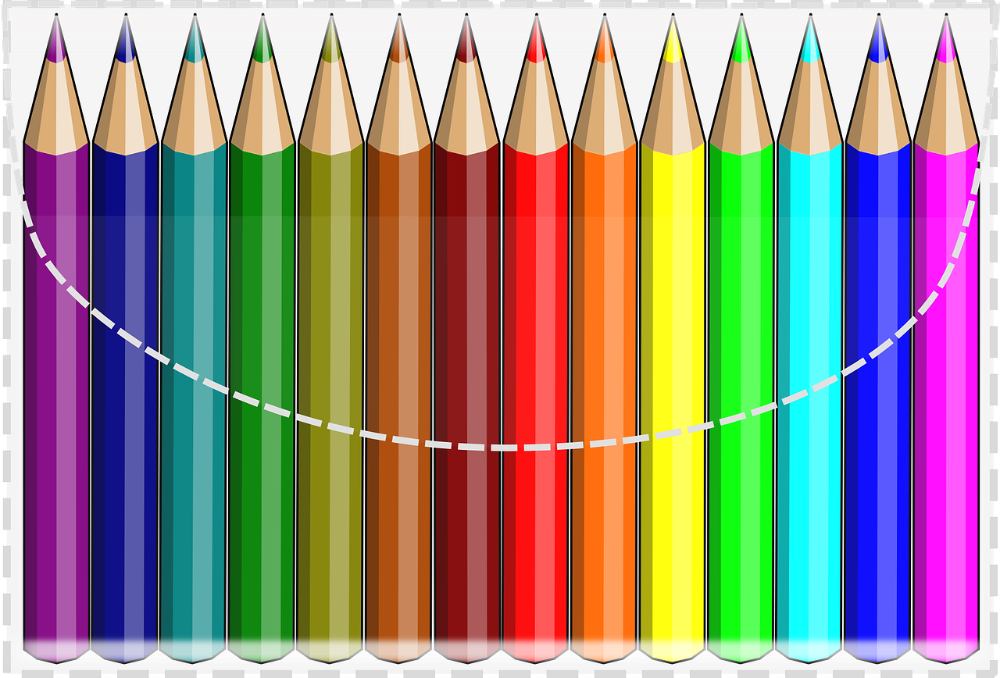 | Hint 2's place-value chart (the one Bob cited) is native Slides shapes with no flat image — used Hint 3's photo instead, tied to the same pencils word problem. A separate, dedicated "Rounding" module also exists on usablemath.org — Bob pointed here instead, in Estimation. |